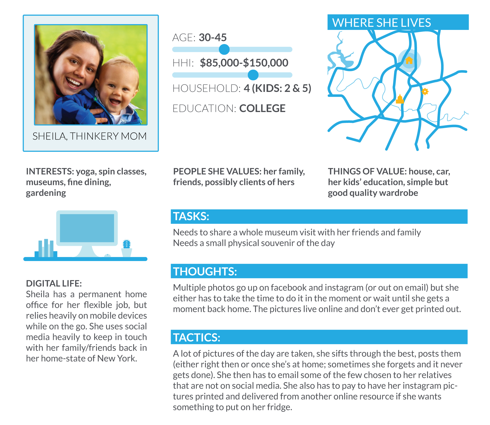
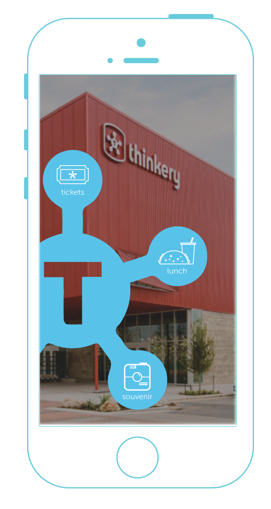
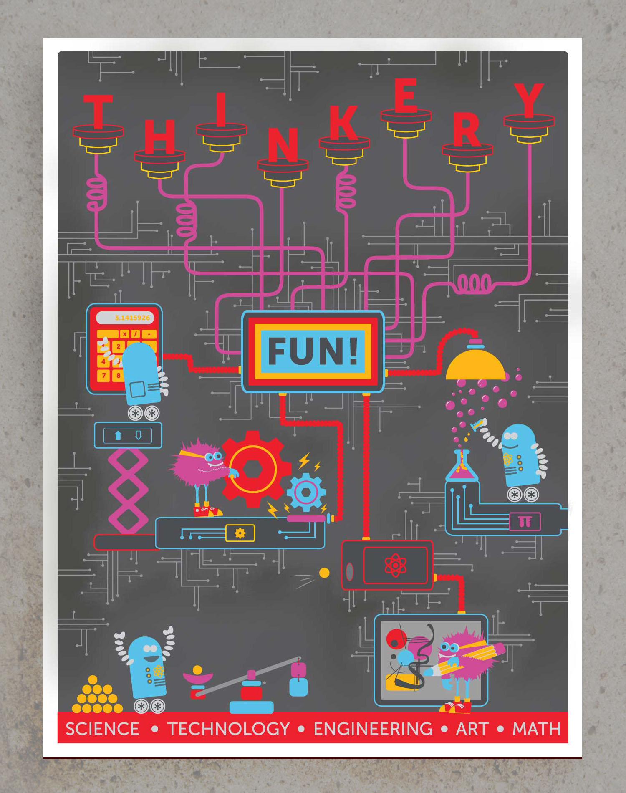
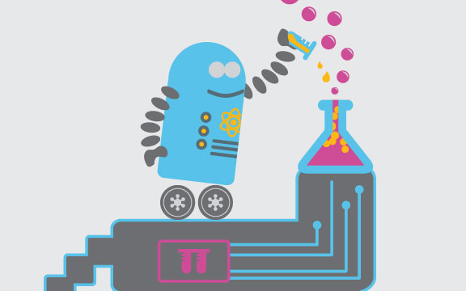
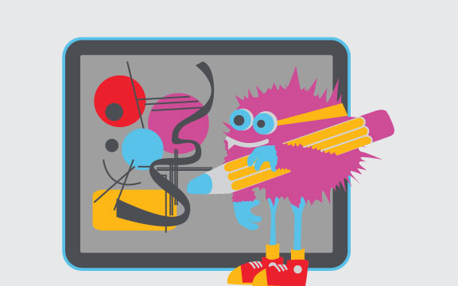
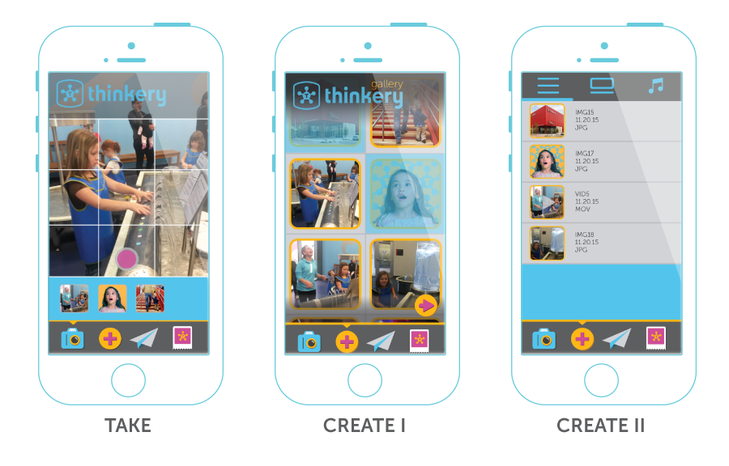
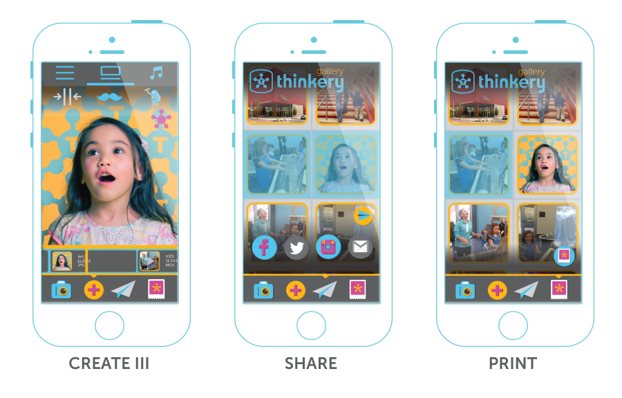

TAKE
The user takes the picture or video, and it ends up in a queue in the bottom. Selecting one of the images lets the user edit it. This example has the user changing the brightness, then saving.
Self-initiated project that explores brand promotion by way of harnessing users' creativity.
User Experience, Visual Design, User Interface, Social Media Strategy
The Austin Children's Museum underwent major changes in 2013 when it moved to a new location, re-branded, and became the Thinkery. While my time as an intern there was short, a lot of the work I did was still floating around my head. I knew I wanted to incorporate the illustrated characters I had created into a digital project somehow. Thus, a concept for a Thinkery app was born.
Strategy: Every entity wants their content to be shared or talked about. Everyone wants their brand to reach as many people as possible. The Thinkery can use its unique position as a bright and colorful brand to give people the opportunity to use the Thinkery branding on their own content to share to the world.
Creative Solution: While it could be possible to create Thinkery-branded filters for various social media outlets, it would be better to create a useful app (resulting in no ticket or lunch lines) that lets people create their own branded pictures or videos and enables them to share in multiple places at once. Providing them with physical print-outs of their Thinkery adventures would be another way to encourage people to use the app.
In order to get a feel for the type of person that would use the Thinkery's app, I created a persona of Sheila, a mom with both millenial and gen-x qualities.
As you can see from the persona above, Sheila is a millenial mom and works from her home in north Austin. She wants both a small physical token of her day with her kids AND a digital one she can send to friends and family. I started thinking about the ways she would need to get to the things she wanted through the app. What started out as a scrolling menu, soon turned into a permanent smaller one on the bottom of the screen. The most important development of the design was that a user had to have access to a starting point of any of the outcomes—TAKE, CREATE, SHARE, or PRINT—all within one touch.
I started by thinking about the steps a user would need to take to get from taking a picture or video to sharing or printing a branded final product. After many sketches and identifiying struggle points, I made a cleaner conceptual map of the way the Souvenir portion of the app worked.
This whole project came to be because I wasn't quite done with the illustrations I had created during my internship. Below, you see the poster that started it all as well as close-ups of the characters that would inspire the visual aspect of the app. The poster focuses on STEAM (Science, Technology, Engineering, Art & Math) to power the Thinkery.
    The user takes the picture or video, and it ends up in a queue in the bottom. Selecting one of the images lets the user edit it. This example has the user changing the brightness, then saving.

In the Create section, the user selects pictures or videos from a gallery. Selecting the arrow button creates a list of the items that are selected.
The user is able to re-order their selections in the list view, then select the timeline view in order to add robots and mustaches to their heart's desire. Additionally, users would be able to add music to their creations.
Similar to the Create section, a user will select the pictures or videos from a gallery they want to share, then select each social network they want to share it on. A message option is available before the user presses send.
Users make their selections from a gallery, then are able to pick up their prints at the Thinkery's front desk.